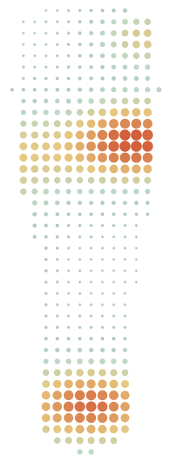

Dr. Rupi Kaila, DC has spent 25 years diagnosing backs, necks, sciatica and injured joints on this stretch of Kingsway. 4.8 stars from 33 Google reviews. Open six days, direct billing to most plans, and ICBC and WCB visits cost you nothing.
No doctor's referral needed. Four minutes on foot from Patterson Station.

How we look before we treatGaitScan pressure mapYou walk across a plate with thousands of sensors. The map shows where your weight lands, which is often where knee, hip and low-back pain begins. Illustration; your scan is taken in the clinic.lightheavy
4.8★33 Google reviews
Since 1988On Kingsway for 37 years
No referralChiropractic, massage, ICBC, WCB
Direct billingPacific Blue Cross, Manulife, Sun Life and more
Mon – SatFrom 9 am, Thursdays to 6:30 pm
What we do
Five ways to get you moving again.
Chiropractic and massage work together under one roof, with shockwave, orthotics and compression wear for the problems that need something more. Every plan starts with an examination and ends with exercises you can do at home.
What we treat
From whiplash to heel spurs.
Most people arrive with one of these. If yours is not on the list, call and ask; Dr. Kaila will tell you honestly whether chiropractic is the right route.
Extended health plan details, so we can bill it directly
ICBC claim number, or WCB claim details, if the injury is from a crash or work
Any X-ray, MRI or specialist reports you already have
Loose clothing you can move in
What happens
Dr. Kaila takes your history and examines how you move and where it hurts, then explains what she found and what she recommends before anything is treated. You leave with a plan and usually a first exercise or two. Patients tell us she rarely needs to see them for long: once the cause is found, the plan is short.
Amy at the front desk answers email quickly, patients say. Questions before you book are welcome.
Car accident or hurt at work?
ICBC: chiropractic visits and 45-minute massage sessions after a motor vehicle accident are covered at no charge to you. No referral. We provide medical-legal reports and attend court when your lawyer or ICBC asks.
WCB: work-injury visits are free of charge to the patient. Call as soon as it happens so the exam is on file early.
DVA and RCMP: covered, no charge, no referral.
We direct bill
Plus any other plan that allows direct billing. Not every plan does; bring your card and we will check. You pay only the portion the plan does not cover.
Fees
Plain fees, posted up front.
Cash, Visa, Mastercard and Interac. Receipts for everything, so you can claim what we could not bill directly. ICBC and WCB claims are no charge to you.
The team
One chiropractor, four RMTs, one naturopath.
Dr. Kaila heads the clinic. The massage therapists are independent registered practitioners who work alongside her, so an adjustment and a massage can be booked back to back.
How Dr. Kaila works
Treat the person, not the X-ray.
Dr. Kaila found chiropractic the hard way: her father spent months bedridden with a disc herniation, was told surgery was his only option, and walked out of a chiropractor's office on crutches after the first visit. She trained at the University of Western States, graduated top of her class in 1998, and later added a master's in nutrition and functional medicine, which is why her questions go past the sore spot to sleep, work, diet and the way you move.
“Without a properly functioning spine and nervous system, optimal health is impossible to achieve. We facilitate this through chiropractic treatment and by encouraging healthy choices: nutrition, exercise and stress management.”
ExamineHistory, movement, orthopaedic and neurological tests. A gait scan when the feet are suspect.
ExplainWhat is wrong, in plain language, and whether she is the right person to fix it.
TreatAdjustments, Active Release, flexion-distraction, shockwave, orthotics, massage, as the case needs.
Hand backStretching and strengthening you can do yourself, so visits taper off instead of stacking up.
Getting here. Four minutes on foot from Patterson SkyTrain Station on the Expo Line; the 19 bus stops on Kingsway outside. Central Park, with its trails and the Swangard Stadium, is across the road.